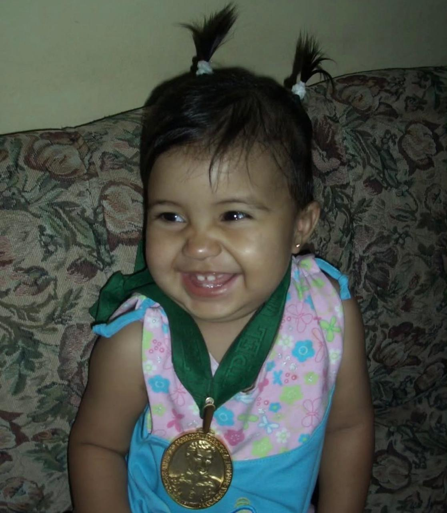
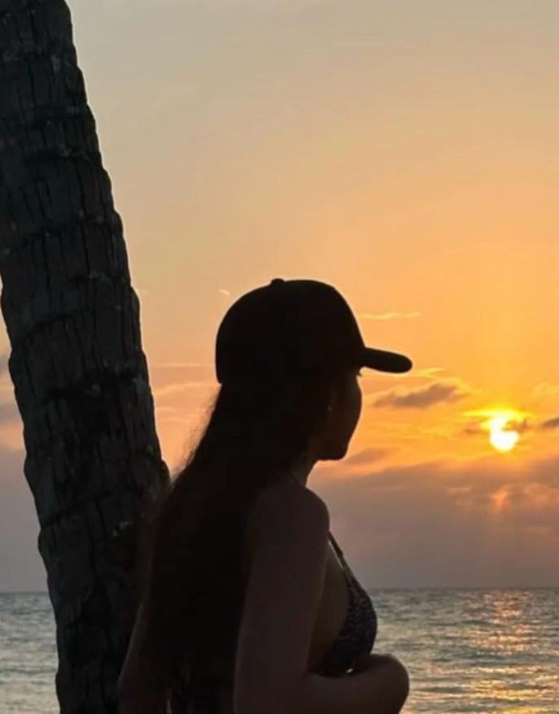

Isa Pantoja
Hermanita isa
Biografia
María Isabel Pantoja Chacin, nacida el 14 de octubre de 2006 en Venezuela, sus padres son Angela y Oswaldo, una pareja con mucho amor y enseñanzas.Siempre fue una niña muy linda, extrovertida y amada por todos; el mejor día de su vida fue obviamente cuando nació su hermanita menor la cual ama con todo su corazón; en 2017 se mudo a Colombia donde siempre fue buena estudiante, conocio a muchas personas y vivio muy buenas experiencias.
Actualmente es una joven de 20 años que vive en Medellín junto a sus padres y su hermana menor, y estudia diseño grafico en la universidad LuisAmigo.

